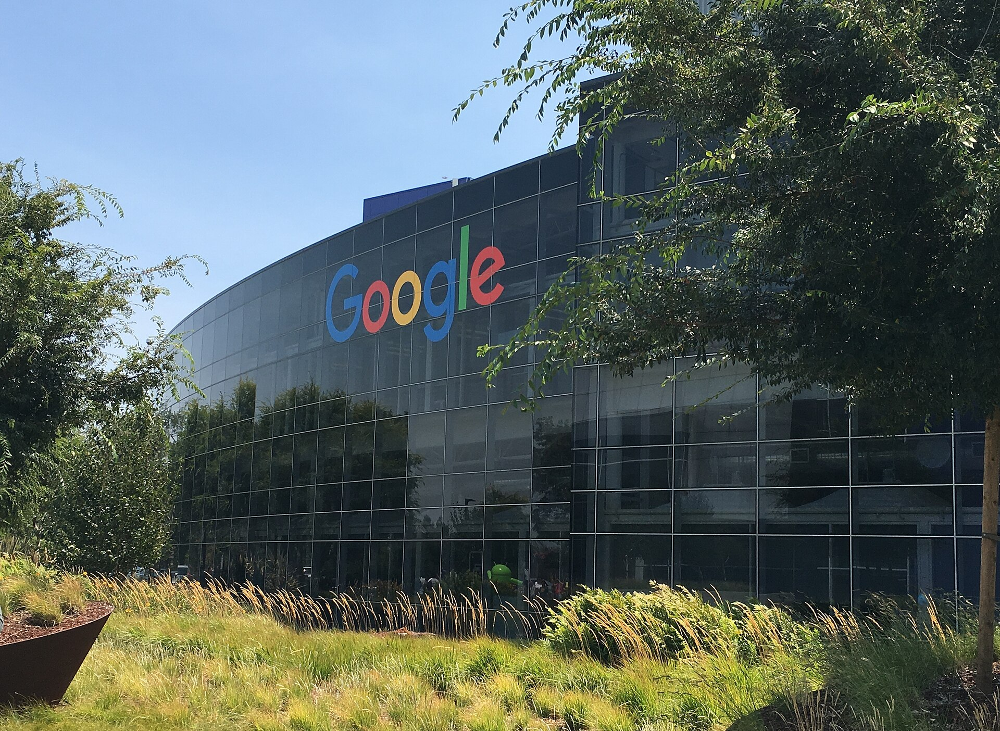

Alphabet's cloud roars and its stock still falls: the number that scares the market is $205 billion

Alphabet beat almost every line of its second quarter after Wednesday's close and the stock fell anyway, sliding about 5% after hours because the one figure that decided the print was not revenue or profit but spending. Group revenue rose 24% to $119.8 billion, Google CloudInstitutionAlphabet's cloud-computing arm, the unit selling the AI infrastructure and models that rivals Amazon Web Services and Microsoft Azure. Its results are the clearest read on whether the capex is earning its keep. revenue jumped 82% to $24.8 billion at a 35.6% operating margin, and the cloud backlogConceptContracted revenue not yet recognized, a measure of demand already booked. Alphabet's grew more than $50 billion in the quarter to $514 billion, just over half of it due within 24 months. swelled past $514 billion. Chief executive Sundar PichaiPersonChief executive of Alphabet and Google. On the call he framed the AI opportunity as still in its "early innings," the justification for spending that now exceeds the company's operating cash flow. called the AI opportunity "early innings."
Then came the bill. Alphabet spent a record $44.9 billion on capital expenditureConceptCash laid out on long-lived assets, here the data centers, chips, and networking that train and serve AI. When it outruns cash generation, free cash flow turns negative, which is what unsettled investors. in the quarter, enough to push free cash flow to negative $5.9 billion, and it raised full-year capex guidance to a range of $195 billion to $205 billion, up from $180 billion to $190 billion. Management added that 2027 outlays would rise "significantly" again. The market read the sequence plainly: demand is real, the backlog proves it, but the cash going into the ground is now compounding faster than the cash coming back out.
The reaction matters beyond one ticker because Alphabet is the first of the megacaps to report, and it set the terms for the referendum investors have been bracing for all week: whether roughly three-quarters of a trillion dollars in combined AI infrastructure spending across the largest technology companies is an investment or an overhang. A beat-and-fall on the most cash-generative name in the group is not the answer the bulls wanted, and it front-runs the same question now aimed at Microsoft, Meta, and Amazon.
"The number that decides the stock isn't revenue or earnings. It's capex."
Why it mattersThis is the cleanest early read on the AI-capex trade that hangs over every equity book: a company can beat, grow its cloud 82%, and still be punished for spending faster than it earns, which reprices how the market underwrites the entire buildout and every filing that will try to raise money against it.